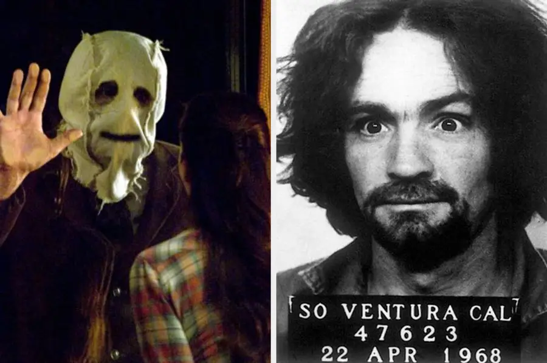

Dear Contributors,
We welcome submissions of paranormal and true crime stories for consideration. However, it's imperative to understand the following before submitting your work:
1. Accuracy: While we appreciate the allure of paranormal and true crime narratives, we prioritize accuracy and integrity in storytelling. Submissions should be based on verifiable facts, well-researched accounts, or credible eyewitness testimonies.
2. Sensitive Content: True crime stories may contain sensitive or distressing content. We encourage contributors to approach these topics with respect and empathy for those involved. Gratuitous depictions of violence or exploitation will not be accepted.
3. Paranormal Claims: If your submission pertains to paranormal phenomena, please note that we approach such content with skepticism. While we value personal experiences, we may require additional evidence or corroborating accounts to support extraordinary claims.
4. Legal Implications: Contributors are responsible for ensuring that their submissions comply with legal and ethical standards. Plagiarism, defamation, or infringement of intellectual property rights will result in rejection of the submission.
5. Editorial Discretion: The editorial team reserves the right to review, edit, or reject submissions based on relevance, quality, or adherence to our editorial guidelines. Submission does not guarantee publication.
By submitting your paranormal and true crime stories, you acknowledge and agree to these terms and conditions.
Thank you for your interest in sharing your stories with us. We look forward to reviewing your submissions.
Sincerely,
- TrueMidnightFrights

1. Types of Submissions Allowed:
- Paranormal Stories: Original accounts or fictionalized narratives of paranormal experiences, including ghost encounters, supernatural phenomena, hauntings, and unexplained mysteries.
- True Crime Stories: Detailed accounts or analyses of real-life crimes, criminal cases, investigations, and mysteries. This may include serial killers, unsolved murders, disappearances, or historical crimes with a chilling aspect.
2. Content Guidelines:
- Authenticity: For true crime submissions, ensure accuracy and factual integrity. Provide credible sources and evidence to support claims.
- Suspense and Intrigue: Submissions should captivate readers with suspenseful storytelling and intriguing plot twists.
- Respect for Victims: When discussing true crime cases, maintain sensitivity and respect for the victims and their families. Avoid glorifying violence or sensationalizing tragic events.
- Believability: Paranormal stories should be written in a manner that suspends disbelief, drawing readers into the eerie atmosphere and supernatural occurrences.
3. Submission Format:
- Title: Choose a compelling title that reflects the essence of your paranormal or true crime story.
- Narrative: Present your story or analysis in a clear and engaging manner, whether it's a firsthand account, fictional narrative, or investigative report.
- Evidence: Provide any relevant evidence, such as photographs, audio recordings, witness testimonies, or historical documents, to support your submissions, especially in true crime cases.
- Length: Stories can vary in length but should be concise and well-paced to maintain reader interest.
4. Submission Process:
- Platform: Utilize the forum's submission platform to share your stories or analyses. Follow any specific submission guidelines provided by the forum moderators.
- Verification: For true crime submissions, ensure that information is verifiable and sourced from reliable sources. Include citations or references where applicable.
- Review Process: Submitted content may undergo a review process by moderators to ensure it aligns with the forum's focus on paranormal and true crime topics.
- Feedback: Contributors may receive feedback or comments from moderators and fellow forum members to enhance their submissions or provide additional insights.
5. Legal Considerations:
- Copyright: Contributors retain the copyright to their original content but grant the forum non-exclusive rights to display, distribute, and promote the submitted material.
- Attribution: Properly attribute any sources or references used in your submissions to respect copyright and intellectual property rights.
6. Community Interaction:
- Engagement: Encourage discussion and interaction among forum members by responding to comments, questions, or feedback related to your submissions.
- Collaboration: Consider collaborating with other contributors or experts in the field to explore different perspectives or aspects of paranormal phenomena or true crime cases.
- Respectful Discourse: Maintain a respectful and supportive environment within the forum community, fostering constructive dialogue and shared enthusiasm for the paranormal and true crime genres.